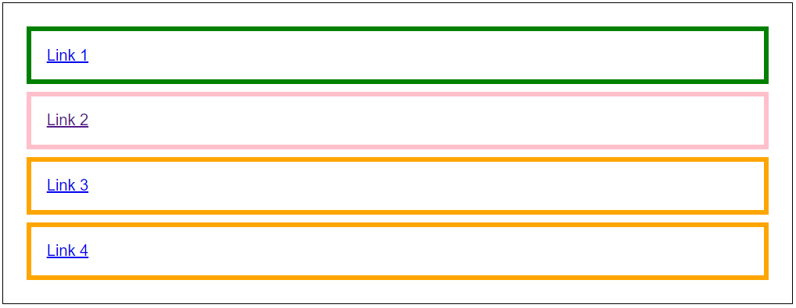

CSS selectors test, level 5
- Maak van iedere <a> element een block element en geef deze een padding van 2% en marge van 1%
- Selecter het <a> element met het title attribuut en geef deze de style: border: 5px solid pink
- Selecter het <a> element waarbij het href attribuut het woord "contact" bevat, geef deze de style: border: 5px solid orange
- Selecter het <a> element waarbij het href attribuut start met woord "https", geef deze de style: border: 5px solid green
Bekijk de volgende afbeelding en zorg met behulp van alleen CSS selectors dat de elementen binnen het <article> element er als volgt uitzien:

Pas de CSS styling toe binnen het <style> element van de pagina.
Het is niet toegestaan om de HTML binnen het <body> element aan te passen
Link 1
Link 2
Link 3
Link 4